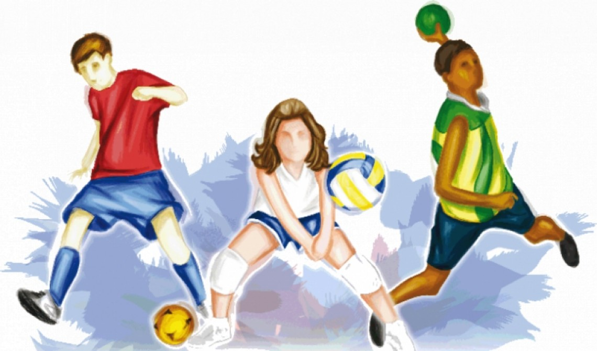
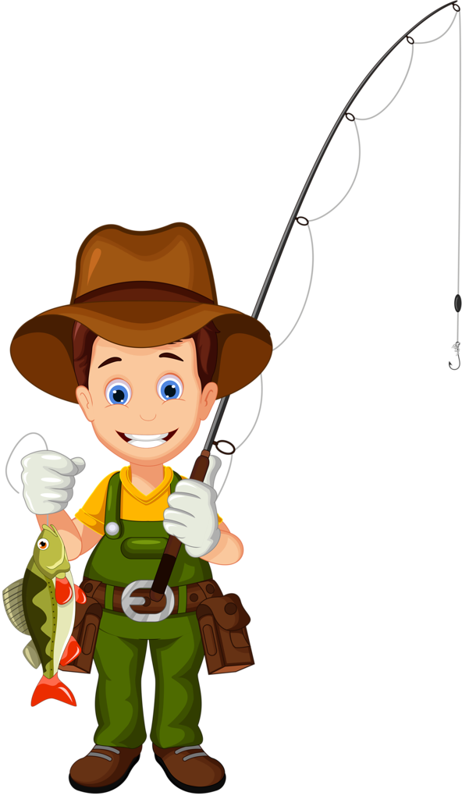

Esportes
|  |
O esporte é muito importante, para sua saúde, ele é muito mais que socializaçao, educação, lazer, e saude. Existem diversos tipos de esportes, cada um com suas regras, fundamentos, e etc... Por exemplo o volei: é um jogo, jogado por muitas pessoas, de diferentes idades, e sexualidades. Existem, VOLEI DE QUADRA, DE AREIA, INDOOR. Cada um com sua caracteristica. Todos nós devemos praticar um pouco de: BASQUETE, VOLEI, FUTEBOL, TENIS DE MESA, HANDEBOLL, FUTSAL, entre outros. Seja individual, seja em equipe, os esportes estão entre as principais atividades físicas praticadas pelo homem moderno. Segundo pesquisa do Ministério do Esporte do Brasil, realizada em 2013, quase metade dos brasileiros que praticam atividades físicas adepta de algum esporte. |
Música
|
A música sempre esteve presente na cultura da humanidade. As poesias trovadorescas, acompanhadas por sons, e os poemas simbolistas, que visam a musicalidade nas suas criacoes, sao exemplos do uso artistico da musica, no qual o objetivo e proporcionar prazer aos ouvidos e evocar sentimentos. A musica é reconhecida por muitos pesquisadores como uma modalidade que desenvolve a mente humana, promove o equilibrio, proporcionando um estado agradavel de bem-estar, facilitando a concentracao e o desenvolvimento do raciocinio, em especial em questoes reflexivas voltadas para o pensamento. |

|
Internet das coisas
|
Em outras palavras, a internet das coisas nada mais e que uma rede de objetos fisicos (veiculos, predios e outros dotados de tecnologia embarcada, sensores e conexao com a rede) capaz de reunir e de transmitir dados. É uma extensao da internet atual que possibilita que objetos do dia-a-dia, quaisquer que sejam mas que tenham capacidade computacional e de comunicacao, se conectem a Internet. A conexao com a rede mundial de computadores possibilita, em primeiro lugar, controlar remotamente os objetos e, em segundo lugar, que os proprios objetos sejam usados como provedores de servicos. Essas novas capacidades dos objetos comuns abrem caminho a inumeras possibilidades, tanto no ambito academico quanto no industrial. Todavia, tais possibilidades acarretam riscos e implicam grandes desafios tocnicos e sociais. |
Pescaria
|
Pesca é a extracao de organismos aquaticos, do meio onde se desenvolveram para diversos fins, alimentacao, a recreacao (pesca recreativa ou pesca desportiva), a ornamentacao (captura de especies ornamentais), ou para fins Comestiveis industriais, incluindo o fabrico de racoes para o alimento de animais em criacao e a producao de substancias com interesse para a saude - como o "famoso" oleo de figado de peixe (especialmente o oleo de figado de bacalhau). |
 |
Programaçãoo
 |
Programação é o processo de escrita, teste e manutencao de um programa de computador. O programa é escrito em uma linguagem de programacao, embora seja possível, com alguma dificuldade, o escrever diretamente em linguagem de maquina. Diferentes partes de um programa podem ser escritas em diferentes linguagens. Programação é o processo de escrita, teste e manutencao de um programa de computador. O programa é escrito em uma linguagem de programacao, embora seja possível, com alguma dificuldade, o escrever diretamente em linguagem de maquina. Diferentes partes de um programa podem ser escritas em diferentes linguagens. |